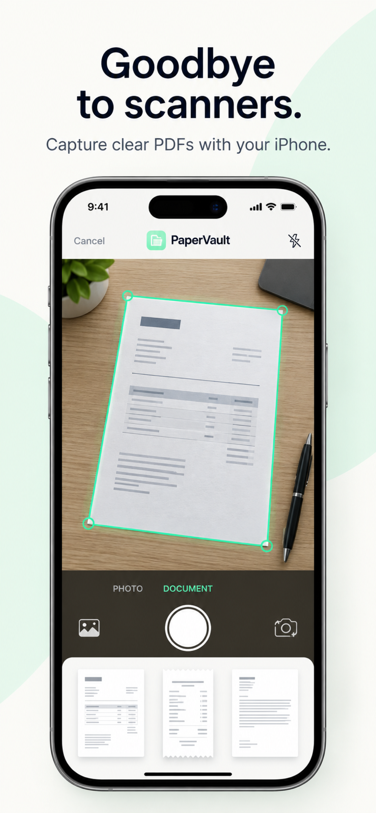

A little less
paperwork.
A lot more peace.
Scan, edit, sign, and protect your PDFs.
One thoughtfully simple toolkit that keeps
your documents on your device.
Made for the everyday.PDF
Good things.
All in order.
big idea.
your device.
From first scan
to final signature.
Everything your PDF needs, without
the back-and-forth between apps.
Your documents
aren’t our business.
Contracts, personal notes, important records. Whatever’s in your PDFs, it stays with you. PaperVault processes your documents on your device.
A place for every page.
A closer look at PaperVault.
Actual screens from the app.



A few things
to know.
Do my documents leave my device?+
PaperVault processes PDFs, image conversion, OCR, compression, and metadata removal locally. It does not upload your documents to developer-controlled servers. If you choose files from iCloud Drive or another file provider, that provider handles its own storage and transfers.
Do I need to create an account?+
No. PaperVault does not require a user account. Your generated documents are saved in the app’s local storage, where you can open, share, rename, and manage them.
What can I do with my PDFs?+
Scan documents, convert images, merge, compress, extract, split, and delete pages. You can also recognize text with OCR, remove metadata, add a signature, protect a PDF with a password, or remove a password you already know.
Can you recover a forgotten PDF password?+
No. You are responsible for keeping your PDF passwords safe. Removing password protection requires the document’s existing password.
How can I get help?+
Contact tshank30@gmail.com with questions about PaperVault or its availability.
Less paperwork.
More possibility.
Meet your next everyday PDF companion.
Ask about availability ↗Have a question? We’re an email away.